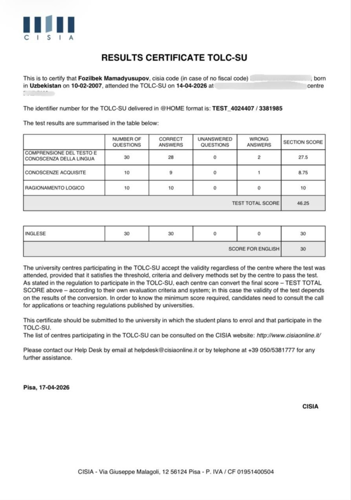
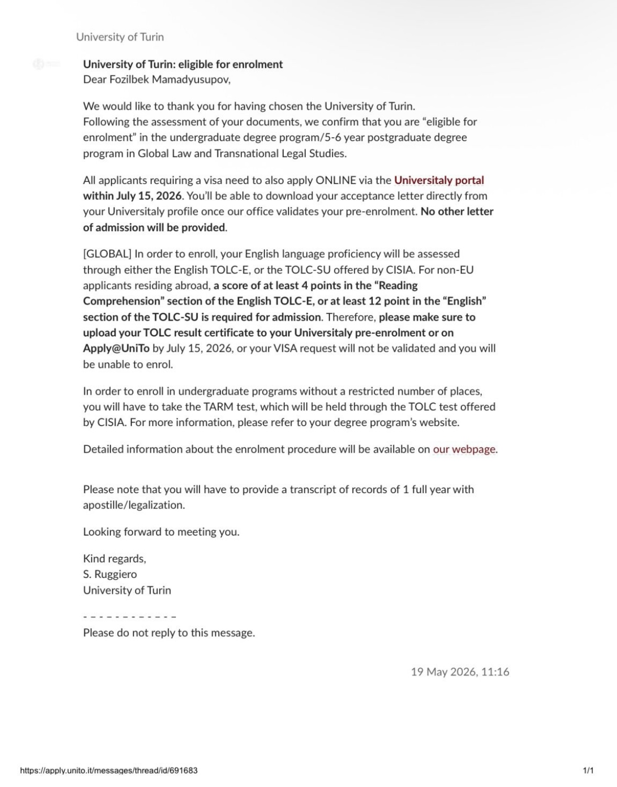

Achievements
A collection of academic achievements, international experiences, and milestones that have shaped my journey.
01 / Academic Excellence
Certificate of Merit
I graduated from an 11-year public school with nearly straight A’s, maintaining outstanding academic performance throughout my education.
The Certificate of Merit was awarded to only two students in each class. Based on my understanding, recipients represented approximately the top 10–12% of students across the entire school.
This recognition reflects my academic dedication, consistency, and commitment to excellence.
02 / International Experience
Erasmus+ Training Course — Latvia
Successfully completed the Erasmus+ training course “The Good of Hope with Restorative Circles,” held in Latvia.
Even though it was short, the networking and knowledge we gained were unforgettable. At first, hearing everyone share their advanced perspectives was overwhelming. I was the youngest participant there.
The practical and theoretical exercises in nature were awesome. This experience reminded me once again how crucial mindset, worldview, and meaningful dialogue truly are.
Those who have walked this path will understand.
03 / University Admission
TOLC-SU Results & University of Turin

TOLC-SU Results Certificate

University of Turin — Eligibility for Enrolment
Two important documents answered many of my doubts and marked a major milestone in my academic journey: my TOLC-SU results certificate and confirmation of eligibility for enrolment at the University of Turin.
The eligibility confirmation concerned the Global Law and Transnational Legal Studies degree program.
These results represent nearly a year of hard work, preparation, and planning. I also received admission-related opportunities from other universities in Italy, but my interest in Turin was part of a carefully considered strategy for my academic future.
For me, these documents represent more than test scores and university correspondence. They reflect persistence, a clear direction, and the value of planning ahead.
The university document confirms eligibility for enrolment; it is not presented as confirmation of completed enrolment.
04 / Personal Growth
A Decision That Changed My Perspective
“The worst and the MOST RIGHT decision of my life.”
Sometimes, the decisions that challenge us the most become the ones that shape us the most.
My journey to Latvia was more than an international trip. It was an opportunity to step outside my comfort zone, meet people with different perspectives, and discover new sides of myself.
Looking back, I see it as a decision that brought both challenges and unforgettable lessons. Despite everything, I would make it again.